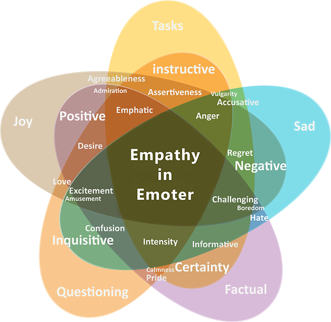
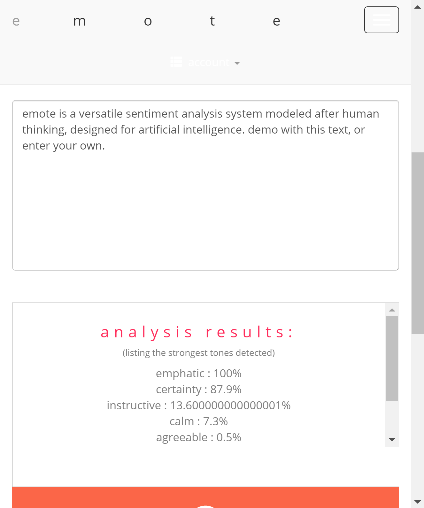
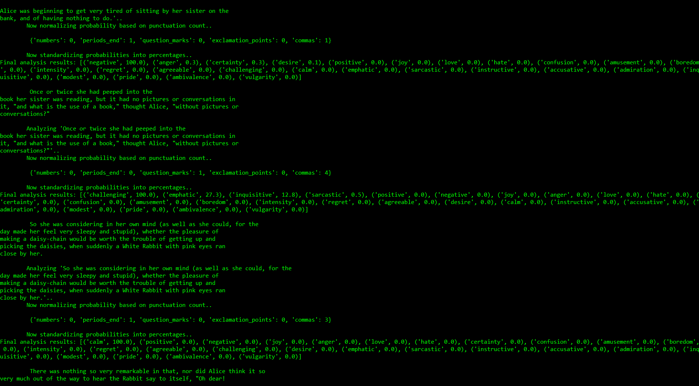
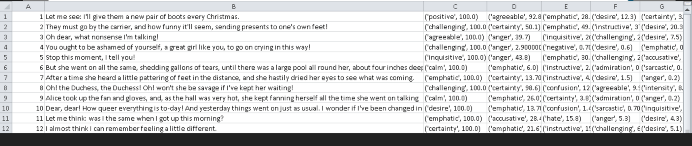
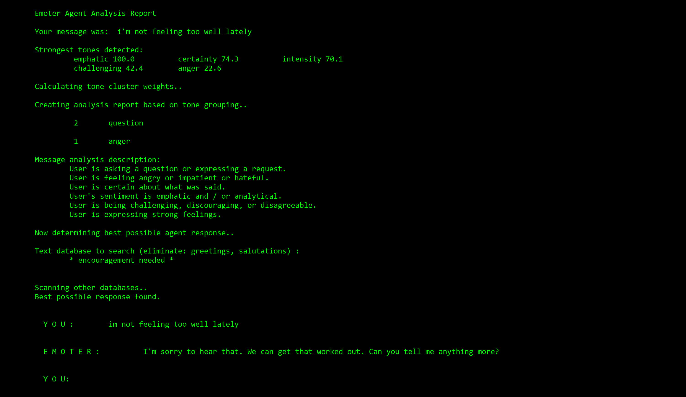
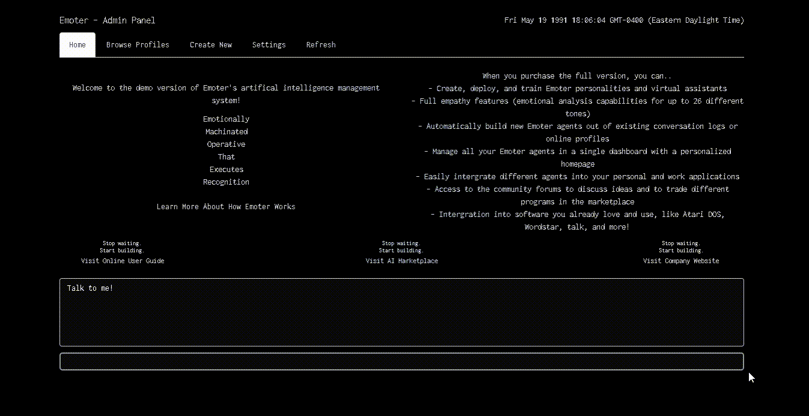

Emote is a sentiment analysis library written in Python with a focus on speed, and is capable of detecting up to a range of 26 different emotional tones, all of which you can browse through here on our site in the virtual globe (double-click to see new sentences). Emote was trained on almost 8000 quotations from film and literature dialogues. Emote comes with a basic REST API, and can be deployed on any server supporting Python 3.5. Click to view Emote's full Empathy diagram 
Emoter is a chatbot library integrated with Emote, where conversational agents can be designed with specific persons / personalities, ways of thinking, and feelings. Emoter chatbots actually recognize the emotional associations of messages to give back appropriate responses, thus connecting with users on a deeper level than other chatbots. Emoter also comes with a way of auto-generating individual chatbot "personalities" based off of a user's Facebook message archive.
Emote is built on top of TextBlob / NLTK, NumPy, pandas, scikit-learn.
Download the source code on GitHub.
Read this article in Chatbots Magazine to learn more about Emote / Emoter's development and research.
Demo Screenshots



Demo Screenshots


What does it mean to feel something? Is it just a chemical action, or can feelings be quantified, classified, and programmed? We don't have any good philosophical answers for that, but the need for emphatic understanding in human-computer interaction is now clearly greater than ever.
We think conversational interfaces are (or, at least, they could be!) one of the most natural and convenient methods of communicating with a wide variety of software and products in today's dynamic market. Our dream? To be able to walk into any store, or office, and be able to ask a coffee machine or printer to help troubleshoot itself.
Emote is our machine-learning emotional analysis platform capable of detecting up to a range of 36 different tones, all of which you can browse through here on our site in the virtual globe.
Emoter is our chatbot platform built off Emote, where conversational agents can be designed with specific persons, ways of thinking, and feelings. Emoters can be run offline, trained for any type of service and context, and actually recognize the emotions of user messages, and then give back appropriate responses, thus connecting with users a deeper level than other chatbots on the market.
Requests, questions, criticisms, and other comments are welcome. Emoter is currently a one man project.
Emote and Emoter's base system and base corpus are all open-sourced under the MIT License.
There are further, more advanced features planned, including automatic loading of interchangable classifier models for different contexts of text, a GUI / API to easily mass train your own corpora, short-term and long-term memory for Emoter chatbots (conversation threading / the ability to remember conversations), and a full Unity3D SDK.
The base systems of Emote and Emoter will continue to be supported and updated on GitHub, and remain open-source and free. Eventually, you may be able to purchase different levels of functionality access through various payment plans, and have access to the full API endpoints on dedicated servers.
However, none of this is set in stone, and it's possible that none of these services will be able to be developed (given that this is only a passion project from one developer). If you are interested in offering payment for these future features, please sign up here .
| For | Purpose | Support | Features | Cost | ||||
|---|---|---|---|---|---|---|---|---|
| Emote+r | Web App & Limited API | Full API Access | Unity SDK | Offine Capability | ||||
| Hobbyists & Open-Source |
Just for fun; or any open-source projects | Free | ||||||
| Small Businesses | Analytics and customer support on a small scale | Scales | ||||||
| Enterprise / Corporate | Larger companies with engineering teams | Scales | ||||||
| Other Professional Devs | Commercial and professional devs / teams | Scales with Free Trial |
See the source code and full documentation on GitHub.
Run_emote.py starts the app by default on port 8080. Deployed locally, you can use the API as follows:
api/sentiment/<text>
returns JSON list of 26 base emotional tones and their percentage levels.
api/sentiment/sentences/<text>
returns JSON dictionary with keys being each sentence found in the text, and values containing lists of the corresponding classified sentiments.
http://localhost:8080/api/sentiment/My cherries and wine, rosemary and thyme And all of my peaches are ruined
returns:
{ "result": [ [ "intensity", 100.0 ], [ "agreeable", 44.800000000000004 ], [ "inquisitive", 24.099999999999998 ], [ "emphatic", 24.0 ], [ "anger", 19.1 ], [ "certainty", 14.7 ], [ "challenging", 11.200000000000001 ], [ "instructive", 6.0 ], [ "hate", 4.6 ], [ "accusative", 4.6 ], [ "desire", 3.1 ], [ "positive", 1.7000000000000002 ], [ "confusion", 1.6 ], [ "negative", 0.4 ], [ "calm", 0.4 ], [ "vulgarity", 0.4 ], [ "joy", 0.0 ], [ "love", 0.0 ], [ "amusement", 0.0 ], [ "boredom", 0.0 ], [ "regret", 0.0 ], [ "sarcastic", 0.0 ], [ "admiration", 0.0 ], [ "modest", 0.0 ], [ "pride", 0.0 ], [ "ambivalence", 0.0 ] ] }
and
http://localhost:8080/api/sentiment/sentiment/sentences/“Cherry†is featured on Lana’s fifth studio album. Alluding to the relationship with a man that takes risks and turns them into the relation where Lana feels like breaking apart; she knows that “real love†has difficult moments and that’s why she still loves him. It has a melancholic stripped-back feel with heavy strings and trap drums serving as background across the song specially on the chorus.
returns:
{ "results": { "Alluding to the relationship with a man that takes risks and turns them into the relation where Lana feels like breaking apart; she knows that \u201creal love\u201d has difficult moments and that\u2019s why she still loves him.": [ [ "instructive", 100.0 ], [ "desire", 36.7 ], [ "emphatic", 23.599999999999998 ], [ "inquisitive", 3.1 ], [ "calm", 3.0 ], [ "certainty", 2.1999999999999997 ], [ "accusative", 1.6 ], [ "agreeable", 0.8999999999999999 ], [ "confusion", 0.8 ], [ "challenging", 0.3 ], [ "anger", 0.1 ], [ "positive", 0.0 ], [ "negative", 0.0 ], [ "joy", 0.0 ], [ "love", 0.0 ], [ "hate", 0.0 ], [ "amusement", 0.0 ], [ "boredom", 0.0 ], [ "intensity", 0.0 ], [ "regret", 0.0 ], [ "sarcastic", 0.0 ], [ "admiration", 0.0 ], [ "modest", 0.0 ], [ "pride", 0.0 ], [ "ambivalence", 0.0 ], [ "vulgarity", 0.0 ] ], "It has a melancholic stripped-back feel with heavy strings and trap drums serving as background across the song specially on the chorus.": [ [ "intensity", 100.0 ], [ "positive", 93.60000000000001 ], [ "emphatic", 58.3 ], [ "instructive", 11.0 ], [ "negative", 10.100000000000001 ], [ "anger", 9.1 ], [ "challenging", 5.800000000000001 ], [ "calm", 5.5 ], [ "vulgarity", 4.5 ], [ "certainty", 4.3999999999999995 ], [ "agreeable", 4.3999999999999995 ], [ "inquisitive", 4.3999999999999995 ], [ "accusative", 2.8000000000000003 ], [ "hate", 1.0999999999999999 ], [ "desire", 1.0 ], [ "confusion", 0.5 ], [ "ambivalence", 0.1 ], [ "joy", 0.0 ], [ "love", 0.0 ], [ "amusement", 0.0 ], [ "boredom", 0.0 ], [ "regret", 0.0 ], [ "sarcastic", 0.0 ], [ "admiration", 0.0 ], [ "modest", 0.0 ], [ "pride", 0.0 ] ], "\u201cCherry\u201d is featured on Lana\u2019s fifth studio album.": [ [ "emphatic", 100.0 ], [ "certainty", 55.2 ], [ "calm", 21.2 ], [ "instructive", 12.6 ], [ "agreeable", 1.6 ], [ "inquisitive", 0.6 ], [ "confusion", 0.4 ], [ "desire", 0.2 ], [ "anger", 0.1 ], [ "hate", 0.1 ], [ "intensity", 0.1 ], [ "admiration", 0.1 ], [ "positive", 0.0 ], [ "negative", 0.0 ], [ "joy", 0.0 ], [ "love", 0.0 ], [ "amusement", 0.0 ], [ "boredom", 0.0 ], [ "regret", 0.0 ], [ "challenging", 0.0 ], [ "sarcastic", 0.0 ], [ "accusative", 0.0 ], [ "modest", 0.0 ], [ "pride", 0.0 ], [ "ambivalence", 0.0 ], [ "vulgarity", 0.0 ] ] } }
Start by importing emote.
import emote as emote
Send text message to be analyzed.
em = emote.Emote()
message = "Duct tape. I need it for... taping something."
result = em.runAnalysis(message)
print(result)
You will get a list of tuples of all the emotional tone values in descending order as a result:
[('desire', 100.0), ('emphatic', 14.7), ('certainty', 9.6), ('challenging', 5.0), ('agreeable', 3.1), ('instructive', 2.4), ('intensity', 2.3), ('accusative', 2.0), ('anger', 1.4000000000000001), ('inquisitive', 0.7000000000000001), ('confusion', 0.4), ('hate', 0.1), ('negative', 0.0), ('calm', -0.0), ('regret', -0.0), ('modest', -0.1), ('vulgarity', -0.1), ('pride', -0.1), ('love', -0.1), ('positive', -0.1), ('amusement', -0.1), ('joy', -0.1), ('admiration', -0.1), ('sarcastic', -0.1), ('boredom', -0.1), ('ambivalence', -0.1)]
You can get values from the result like this:
result[0
returns the strongest tone classification-value pair:
('desire', 100.0)
and
result[0][0]
returns the strongest tone classification:
'desire'
while
result[0][1]
returns the strongest tone value:
100.0
And so
result[1]
returns the 2nd strongest tone classification-value pair:
('emphatic', 14.7)
and so on for all 26 base tones, in descending order of value. Eventually, the API will be expanded to return more data like a descriptive psychological analysis, hence why the result is returned as a list.
Start by importing emoter.
import emoter as emt
Send a message for the bot to analyze and respond to..
emtBot = emt.Emoter()
message = "Hey there, how are you?"
result = emtBot.getMsg(message)
print(result)
You will get a string returned with Emoter's matching response statement to your message.
Hello, how can I help you?
Loading Different Emoter Corpora
To load a different, stored corpus in the same Emoter instance, you must have all the necessary text files to build the corpus, in a folder within /data. Pass the exact name of the folder name as the single parameter for Emoter(brain_path).
import emoter as emt
brain_path = "custom_bot_name"
emtBot = emt.Emoter(brain_path)
emtBot.getMsg("hello emoter")
To train an existing Emoter with a new brain (must be located within /data:
new_brain_path = "different_virtual_assistant"
emtBot.trainDatabase(new_brain_path)
emtBot.getMsg("hello new emoter")